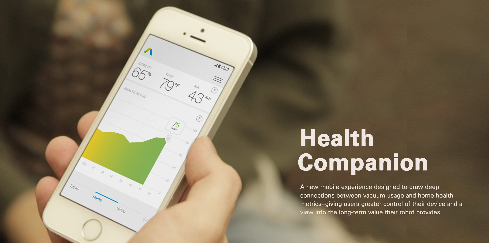
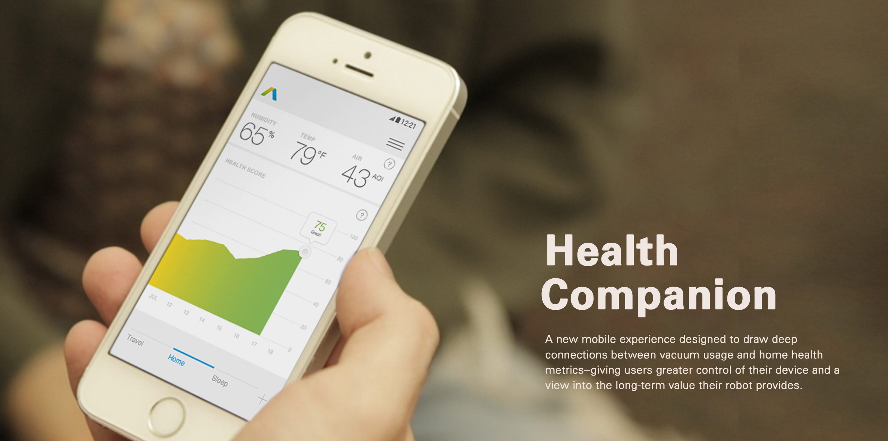

CLIENT: Samsung
DURATION: 8 months, 2016~2017
TEAM: ANGEL YU, NEIL BANTOC, PEGGY CHAU, mark mitcheli, KRISTINA WAGNER
MY ROLE: product management, project management, end-to-end ux design, visual design
design process
An Ambiguous Front:
Building a Framework for
Understanding
In January 2017, the Samsung Home Appliances team approached us with a request: design the next generation of Samsung POWERbot robot vacuum. We knew we needed to give this a little more definition, so we started by learning everything we could about RVCs. We realized that in order to design a product, we needed to also understand the context. In this case, we needed to understand not only how RVCs work, but also the people, task, and environment an RVC exists in relationship with. The team pulled from a combination of desk and field research methods to excavate each of these layers below.

Top Insights
/ Consumers have high expectations which are unmet
/ Consumers do not trust their robot vacuum cleaners
/ Cleaning restores the value of care homes provide
Reframe:
Designing for Trust
All of these insights are critical to designing better robot vacuum experiences. However, the second insight offered the richest opportunity in terms of interaction design. We decided, therefore, to devote our attention to a single question (while addressing insights one and three with less emphasis): how might we make people feel comfortable with using robot vacuums in their home?
Identifying Opportunities
in the User Journey
Having established our design inquiry, we took a step back and mapped out the user's journey from product unboxing to long term usage. This step helped us to identify current pain points, envision ideal experiences, and brainstorm ways to realize the ideal future. To facilitate the visioning process, we used Crazy 8's to generate as many ideas as possible. We voted on the best ones as a team, then further narrowed them down through speed dates with users.

Building Trust Through
Communication
One of the pain points that lead to a lack of trust is the fact that people have no idea what is going on when a robot behaves in a way they did not expect. We came up with a solution which uses a light rim to increase the transparency of the robot's internal state. We created a series of light sequences, tested them, and found that people appreciated greater communication, but had reservations about the intensity and frequency of the communication. Based on this feedback, we toned down the brightness of the lights and determined the best scenarios for usage.

Nudging Behaviors Through
Reminders
The dock combines the idea of communication with care. In this case, light takes the form of an ambient display, which provides gentle feedback on the frequency you've run your robot vacuum as well as the overall health metrics of your home. The fact of it being stationery offered opportunities for consistent communication, which encourages patterns and creates value. In user testing, the dock is well received, and we worked to gradually improve the size and form.

Combining the Best of
Two Worlds
The handle originates from a phenomenon we observed through surveys, interviews, and contextual inquiry: while RVCs are advertised to be fully autonomous, the truth is that users found it easier and more efficient to physically alter its actions, because it is not doing what they want. Many of these users also own a regular vacuum cleaner in addition to an RVC. Why not make available the best of both worlds? The crux of our prototyping challenge was making the handle easy to attach and detach – which we eventually accomplished with two vacuum formed pieces that locked together under pressure.

Creating an Intuitive & Valuable
Mobile Experience
The app is ultimately what ties all of our themes together: communication, control, and care, all of which add up to building trust and creating value. We found the current Samsung Smart Home app to be poorly perceived due to a cluttered UI, confusing terms, and lack of functionality. We focused then on making the app more intuitive through a simplified UI, and investigating top concepts that came up in our visioning session. We conducted several rounds of user testing, which validated our concepts and helped to refine details of the design.

Rethinking of the home screen as a health dashboard

Redesigned control makes interaction more intuitive through visual hierarchy and progressive disclosure

Redesigned communication with the robot vacuum
Final Thoughts
The biggest challenge the team came across was scoping. We were an ambitious group, and wanted to solve things at a holistic and root level. However, a big problem can be made up of smaller problems, and each of these demands a solution of its own. We learnt of this as the project went on and produced a much better result when we started to define the problem to a narrower scope.
Where to start when presented with something overwhelming and complex? I think there is great satisfaction to be gained in solving just a piece of the puzzle. With solving each puzzle comes a step closer to a vision. This project taught me the importance of perseverance and I think, by treating each challenge with attentiveness, we are well on our way to solving bigger problems.
You Might Also Like
DESIGNING FOR VALUE CO-PRODUCTION
VIA MOBILE
SCOPING AND REFRAMING STUDENTS'
HOUSING EXPERIENCE
© 2016 made by angel shi yao Yu